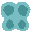
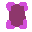
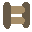

TOOLS
At the beginning of each run 9 tools are randomly selected out of the 24 in the game. In each level the player is given 3 tools out of this selection.
Below is a list of tools and their effects.
Ball: Creates a round platform near the player. These platforms slowly float upwards.

Bamboo: Creates a long, thin, flexible platform. The platform won't reach it's full length if blocked by an object.
Bouncer: Shoots out a small, bouncy object that the player can use to reach greater heights.
Butterfly: Teleports the player a short distance before returning them to the butterfly's location a few seconds later.
Upgrav: Creates a rectangular field that pushes objects within it upwards.
Delete: Removes any objects a short distance from the player.
Fish: Shoots out a fish that flops about randomly..
Instabox: Creates a small, immobile circular platform a short distance from the player.
Ladder: Creates a ladder that stretches out over a few seconds.
Phaser: Travels in the direction it was fired until it passes through an object. After that the player is teleported to where it phased through the object.